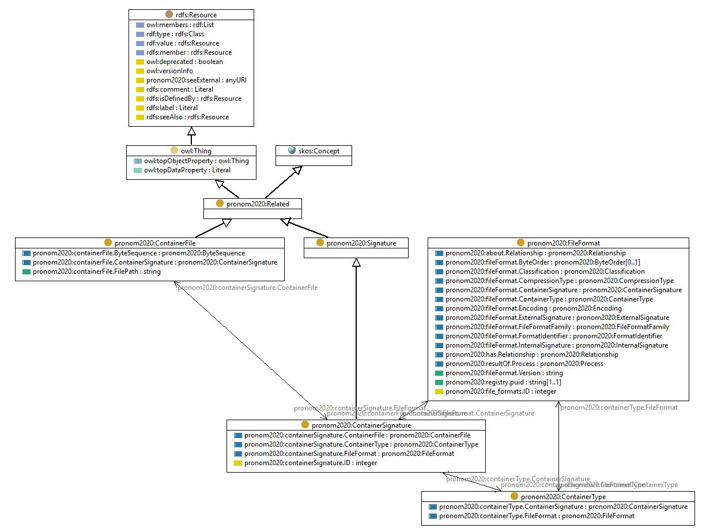

http://data.nationalarchives.gov.uk/formatregistry/def/ContainerSignature
Class pronom2020:ContainerSignature

rdf:type
owl:Class
rdfs:comment
The signature of a containers contents
rdfs:label
Container signature
rdfs:subClassOf
pronom2020:Signature
skos:prefLabel
Container signature
References
as rdfs:domain (
pronom2020:containerSignature.ID
,
pronom2020:containerSignature.FileFormat
,
pronom2020:containerSignature.ContainerType
,
pronom2020:containerSignature.ContainerFile
)
as rdfs:range (
pronom2020:fileFormat.ContainerSignature
,
pronom2020:containerType.ContainerSignature
,
pronom2020:containerFile.ContainerSignature
)
Generated with
TopBraid Composer
by
TopQuadrant, Inc.